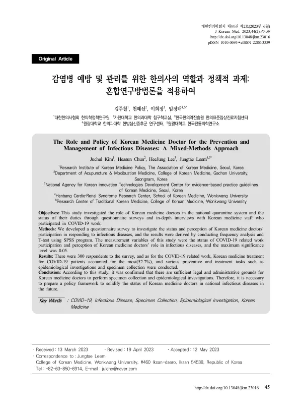

The Role and Policy of Korean Medicine Doctor for the Prevention and Management of Infectious Diseases: A Mixed-Methods Approach
Kim J, Chun H, Lee H, Leem J
Journal of Korean Medicine 44(2):45-59

첫 장 · 오픈액세스First page · open access
논문 소개Summary
코로나19 초기에 한의사 55명가량이 검체채취 업무 참여를 신청했으나 투입 인력에서 빠졌고, 한의과 공중보건의사도 대구·경북 조기 투입에서 제외되었습니다. 그 뒤 대한한의사협회가 전화상담센터와 진료접수센터를 따로 운영해 모두 10,749명을 진료했습니다. 이 연구는 그 자리에 있었던 한의의료진에게 무엇을 했고 무엇이 막혔는지를 직접 물었습니다.
설문과 심층인터뷰를 함께 쓰는 혼합연구입니다. 코로나19 업무에 참여한 한의의료진 300명이 응답했고 그중 공중보건의사가 140명, 임상의가 160명이었습니다. 빈도분석과 t-검정을 썼고, 인터뷰는 주제분석으로 3개 주제와 12개 범주를 뽑았습니다.
업무 만족도는 임상의가 공보의보다 전반적으로 유의하게 높았고 두 군 모두 근무조건 만족도가 가장 낮았습니다. 보완이 필요한 분야로는 두 군 모두 검체채취(54.7%)를 꼽았고, 코로나19 환자 한의치료가 보완이 필요하다고 답한 사람은 한 명도 없었습니다. 애로사항은 공보의가 정부와 유관기관의 소극적 협조(53.6%), 임상의가 한의진료에 대한 수가 배제(62.5%)를 가장 많이 들었습니다. 시급히 해결할 것으로는 한의사 참여 보장을 위한 제도 개선(71.3%)과 건강보험 수가 적용(58.3%)이, 앞으로 가장 먼저 확대되어야 할 분야로는 신속항원검사와 유전자증폭을 통한 진단검사(41.3%)가 꼽혔습니다.
법적 근거는 이 논문이 분명하게 짚었습니다. 감염병의 예방 및 관리에 관한 법률 제2조는 감염병환자를 의사, 치과의사 또는 한의사의 진단으로 확인된 사람이라고 정의합니다. 같은 법 제79조의4는 신고 의무를 위반한 한의사를 의사·치과의사와 나란히 처벌하도록 규정합니다. 신고 의무를 지운 법이 진단 권한을 인정하지 않을 수는 없다는 것이 저자들의 논지입니다.
한계는 두 가지입니다. 대상을 한의의료진으로 한정했으므로 코로나19 활동에 적극적이고 호의적인 사람들로 표본이 치우쳤을 수 있고, 방역과 의료에서 한의사의 역할을 입체적으로 보기에도 모자랍니다. 한 가지 덧붙이면, 업무 종류별 참여 비율은 초록과 본문, 표의 항목 이름이 서로 어긋나 있어 이 소개글에는 옮기지 않았습니다.
Early in the COVID-19 pandemic some 55 Korean medicine doctors volunteered for specimen collection duty and were left out of the deployment; Korean medicine public health doctors were likewise excluded from the early commissioning sent to Daegu and North Gyeongsang. The Association of Korean Medicine then ran its own telephone consultation centre and treatment reception centre, seeing 10,749 patients in total. This study asked the Korean medicine staff who were there what they did and what was blocked.
It is a mixed-methods study combining survey and in-depth interview. Three hundred Korean medicine staff who took part in COVID-19 work responded — 140 public health doctors and 160 clinicians. Frequency analysis and t-tests were used, and thematic analysis of the interviews produced three themes and twelve categories.
Satisfaction with the work was significantly higher overall among clinicians than among public health doctors, and working conditions scored lowest in both groups. Both groups named specimen collection as the area most in need of reinforcement (54.7%), while not a single respondent said Korean medicine treatment of COVID-19 patients needed reinforcement. The greatest difficulty was passive cooperation from government and related agencies for public health doctors (53.6%) and exclusion of Korean medicine care from reimbursement for clinicians (62.5%). The most urgent fixes were institutional reform guaranteeing participation (71.3%) and health insurance reimbursement (58.3%); the role to be expanded first in a future outbreak was diagnostic testing by rapid antigen test and PCR (41.3%).
The paper sets out the legal basis plainly. Article 2 of the Infectious Disease Control and Prevention Act defines an infectious disease patient as one confirmed by the diagnosis of a physician, dentist or Korean medicine doctor. Article 79-4 of the same Act penalises a Korean medicine doctor who fails to report, alongside physicians and dentists. A law that imposes the duty to report, the authors argue, cannot withhold the authority to diagnose.
Two limitations are given. Restricting the sample to Korean medicine staff may have skewed it toward those active in and favourable to COVID-19 work, and it is not enough to see the role of Korean medicine in the epidemic response in the round. One further note: the proportions by type of duty are labelled inconsistently across the abstract, the body text and the tables, so they are not reproduced here.
인용Cite
Kim J, Chun H, Lee H, Leem J. The Role and Policy of Korean Medicine Doctor for the Prevention and Management of Infectious Diseases: A Mixed-Methods Approach. Journal of Korean Medicine. 2023;44(2):45-59. doi:10.13048/jkm.23016